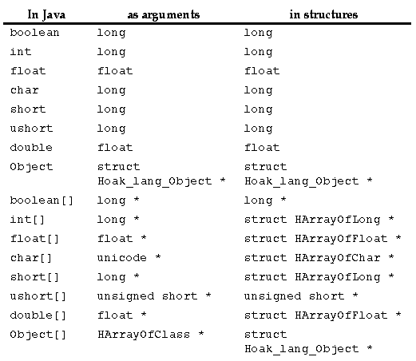

There are two places that you will see Java types exposed in C, inside of structures made to map over Java instances and as arguments to C routines. For the most part these two uses reflect the same correspondence between Java types and C types. The most notable difference between Java types and C types are with Java arrays.

Implementing Native Methods
Generated with CERN WebMaker